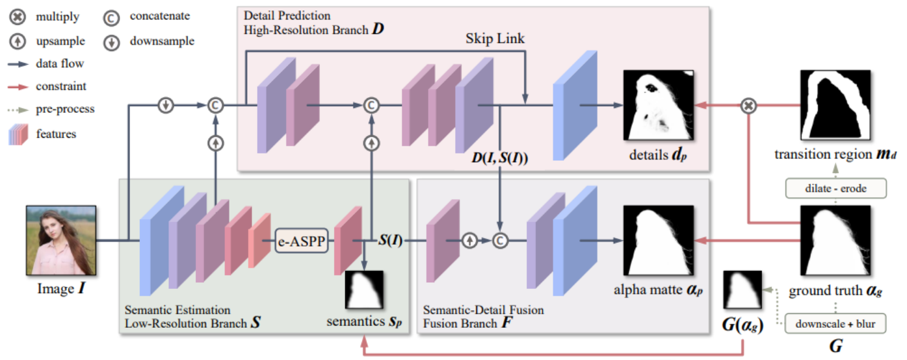
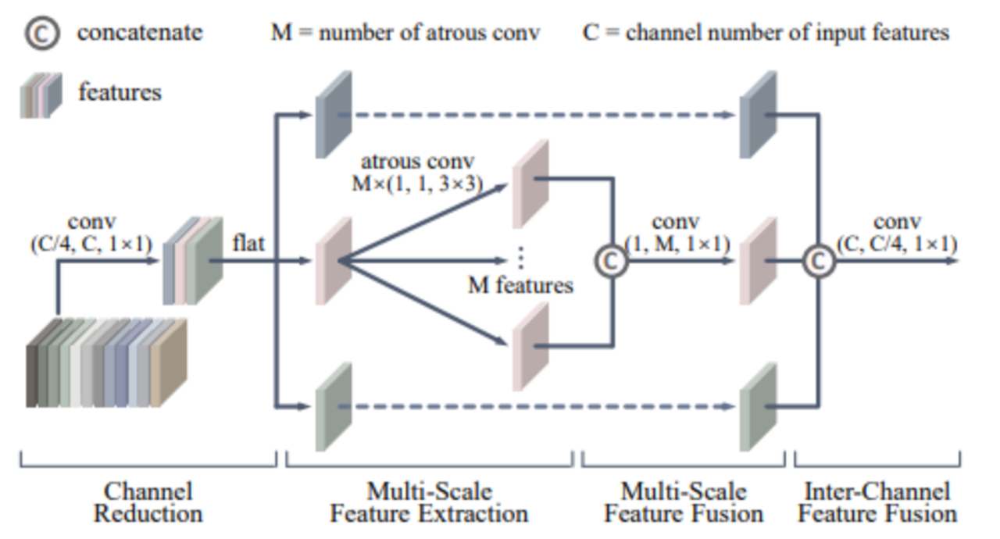

A MODNet é uma Rede de Treinamento em Pesquisa Marie Curie no campo da Teoria dos Modelos e suas Aplicações. Essa rede foi financiada pela Comissão Europeia no âmbito do Programa-Quadro 6 (FP6) e operou de 1º de janeiro de 2005 a 31 de dezembro de 2008.
O principal objetivo da MODNet era promover o treinamento e a pesquisa em teoria dos modelos, uma parte da lógica matemática que lida com estruturas abstratas, chamadas modelos. Historicamente, a teoria dos modelos tem conexões com várias outras áreas da matemática. Durante a última década até o período da MODNet, a teoria dos modelos atingiu uma nova maturidade, resultando em aplicações significativas na geometria diofantina, geometria analítica, teoria de Lie, além de interações robustas com teoria de grupos, teoria de representação de álgebras de dimensão finita e estudo dos p-ádicos.
A MODNet foi projetada para abordar as necessidades de formação de jovens pesquisadores em ferramentas avançadas de teoria dos modelos e nas áreas onde essas ferramentas são aplicadas. Isso envolveu treinamento de doutorandos e oportunidades de pós-doutorado, bem como atividades diversas, como visitas, escolas de verão, workshops e conferências, para enriquecer a formação dos participantes.
No MODNet, dividimos o objetivo de matting sem trimap em três partes: estimativa semântica, previsão de detalhes e fusão semântica-detalhe. Otimizamos essas partes simultaneamente por meio de três ramos (Figura 2). Nas subseções seguintes, vamos explorar o design de cada ramo e as supervisões utilizadas para resolver os sub-objetivos.
Uma imagem de entrada (I) é fornecida à arquitetura do MODNet.
Este ramo é dedicado à estimativa semântica. Em outras palavras, ele se concentra em compreender a informação semântica presente na imagem, especialmente em relação ao retrato.
O Ramo D é responsável por prever detalhes, especialmente os detalhes de contorno na imagem. Ele visa capturar informações sobre as bordas do retrato.
O Ramo F trata da fusão entre a informação semântica e os detalhes previstos. Ele visa combinar de maneira eficaz a estimativa semântica e os detalhes para gerar um alfa matte final preciso.
A característica fundamental do MODNet é a otimização simultânea desses três ramos. Ao abordar a estimativa semântica, a previsão de detalhes e a fusão semântica-detalhe ao mesmo tempo, o modelo é capaz de aprender e aprimorar esses aspectos inter-relacionados.
Os três ramos (S, D e F) são interdependentes, ou seja, trabalham juntos e se influenciam mutuamente. As correlações entre os sub-objetivos decompostos (semântica do retrato, detalhes de contorno e alfa matte) são utilizadas para fortalecer uns aos outros.
Supervisões explícitas são geradas a partir do alfa matte verdadeiro (αg), fornecendo orientações claras para o treinamento de cada ramo. Isso garante que as previsões estejam alinhadas com os resultados desejados.
Durante o treinamento, as supervisões explícitas são geradas a partir do alfa matte verdadeiro. Essas supervisões guiam cada ramo individualmente, assegurando que as previsões estejam alinhadas com os resultados desejados.
A ilustração refere-se a um componente chamado e-ASPP (Enhanced Atrous Spatial Pyramid Pooling), que é utilizado em redes neurais para processamento de imagens. O e-ASPP é uma técnica ou camada usada em redes neurais convolucionais para melhorar a eficiência do processamento de informações espaciais em imagens. A eficiência dele é atribuída à sua capacidade de extrair e fundir características em várias escalas de profundidade. Isso significa que ele é capaz de processar informações em diferentes níveis de detalhe.
A expressão "depth-wise" sugere que a extração de características ocorre em profundidade, possivelmente referindo-se a diferentes camadas ou níveis de abstração na rede neural. Após a extração de características em várias escalas, há uma fase de fusão inter-canal, o que implica que as características extraídas em diferentes canais (ou características específicas) estão sendo combinadas. As linhas pontilhadas indicam que a estrutura é semelhante à linha sólida na ramificação central. Isso sugere uma repetição ou compartilhamento de certa estrutura ao longo da arquitetura, possivelmente para promover consistência ou eficiência.
MODNet: Real-Time Trimap-Free Portrait Matting via Objective Decomposition